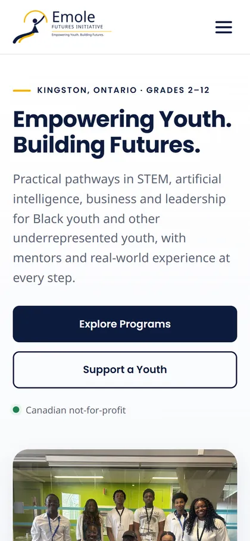
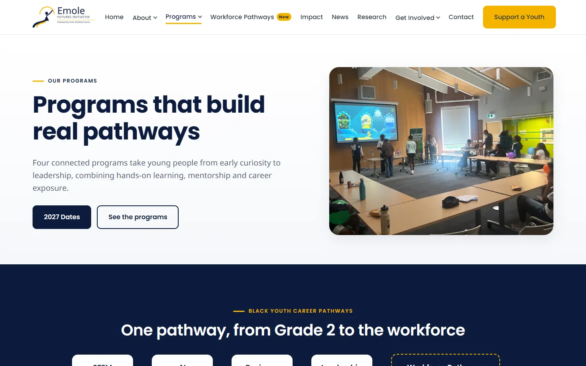
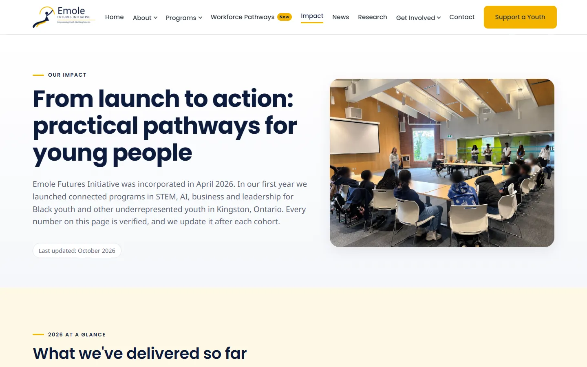
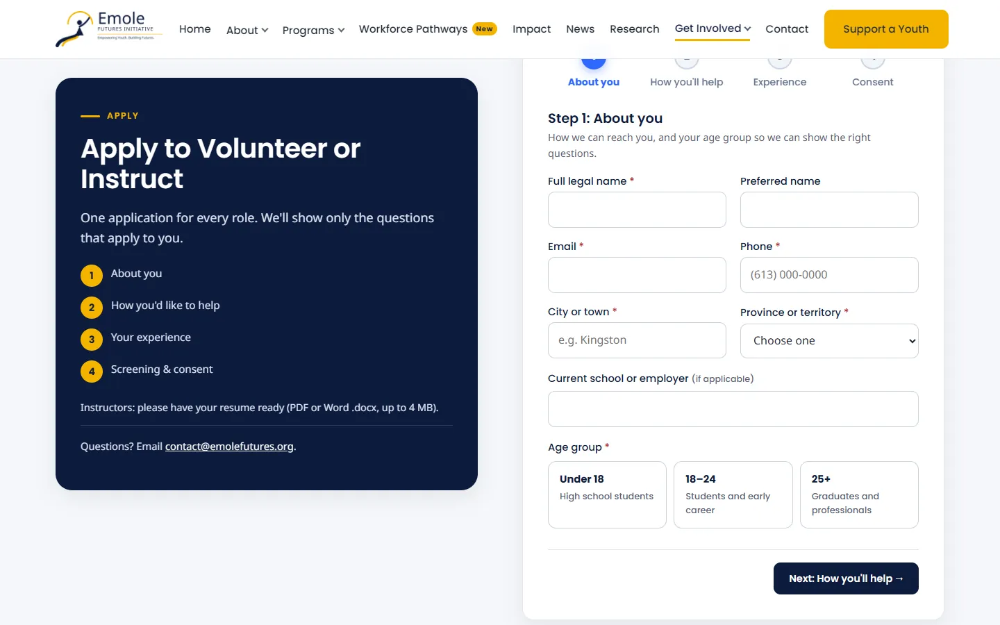

A website a grant reviewer can believe in thirty seconds.


Overview
Emole Futures Initiative is a Canadian not-for-profit in Kingston, Ontario, running STEM, AI, business and leadership programs for Black youth and other underrepresented youth in grades 2 to 12.
Through Informanos, I took over their website: I planned the rebuild, designed and built the new site, moved it off Wix, and now look after it.
The programs had grown. The website hadn’t.
The site was built in April 2026 and not touched again, while Emole launched AI training, Saturday STEM sessions and a business cohort. It also wasn’t answering the questions funders ask: is this organisation real, active, well run, safe for young people and able to grow?
Emole was applying for corporate and foundation grants, so the website had become part of every application.
Three rules I built around.
- Evidence over adjectivesEvery number, quote and logo on the site traces back to a confirmed fact. Nothing invented to sound impressive.
- Show the real EmoleReal program photos of the young people Emole serves, instead of stock images of adults in suits.
- Answer the reviewer fastWho you serve, what you’ve delivered, who governs you and how youth are kept safe, all within a click of the home page.
Plain HTML, real photos, every claim backed.
One pathway, four programs
STEM, AI, business and leadership are shown as one path a young person moves along, from early curiosity to leading others.

Impact a funder can check
The impact page says when each number was last verified and updates after every cohort. Governance, safeguarding and accessibility each have their own page.

Forms that land where the team works
Volunteer applications and program registrations are handled by small server functions that send them straight to the team, with a step-by-step form that only asks the questions that apply.

Where it stands.
The new site has been live at emolefutures.org since 7 October 2026, and I keep it up to date with news after each program week.
Reflection
Not every project needs a framework. Here the right engineering choice was the simplest one: plain pages that load fast and a build script anyone can run, so the site keeps working and stays easy to update long after a handover.